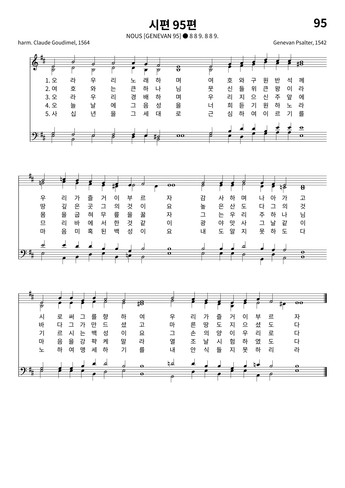

시편 95편
NOUS [GENEVAN 95] · 8 8 9. 8 8 9.
곡조: Genevan Psalter, 1542 · 화성: Claude Goudimel, 1564 · 가사: 개역한글판 시편 95편 편역(AI 초벌 편역판 · 신학 감수 전) · 5절
악보 PDF MusicXML(출력용) MusicXML(반주용, 전주·반복 포함) 개역한글 시편 95편 읽기

가사
1절
오라 우리 노래하며
여호와 구원 반석께
우리가 즐거이 부르자
감사하며 나아가고
시로써 그를 향하여
우리가 즐거이 부르자
오라 우리 노래하며
여호와 구원 반석께
우리가 즐거이 부르자
감사하며 나아가고
시로써 그를 향하여
우리가 즐거이 부르자
2절
여호와는 큰 하나님
뭇 신들 위 큰 왕이라
땅 깊은 곳 그의 것이요
높은 산도 다 그의 것
바다 그가 만드셨고
마른 땅도 지으셨도다
여호와는 큰 하나님
뭇 신들 위 큰 왕이라
땅 깊은 곳 그의 것이요
높은 산도 다 그의 것
바다 그가 만드셨고
마른 땅도 지으셨도다
3절
오라 우리 경배하며
우리 지으신 주 앞에
몸을 굽혀 무릎을 꿇자
그는 우리 주 하나님
기르시는 백성이요
그 손의 양이 우리로다
오라 우리 경배하며
우리 지으신 주 앞에
몸을 굽혀 무릎을 꿇자
그는 우리 주 하나님
기르시는 백성이요
그 손의 양이 우리로다
4절
오늘날에 그 음성을
너희 듣기 원하노라
므리바에서 한 것 같이
광야 맛사 그 날 같이
마음을 강퍅케 말라
열조 날 시험하였도다
오늘날에 그 음성을
너희 듣기 원하노라
므리바에서 한 것 같이
광야 맛사 그 날 같이
마음을 강퍅케 말라
열조 날 시험하였도다
5절
사십 년을 그 세대로
근심하여 이르기를
마음 미혹된 백성이요
내 도 알지 못하도다
노하여 맹세하기를
내 안식 들지 못하리라
사십 년을 그 세대로
근심하여 이르기를
마음 미혹된 백성이요
내 도 알지 못하도다
노하여 맹세하기를
내 안식 들지 못하리라